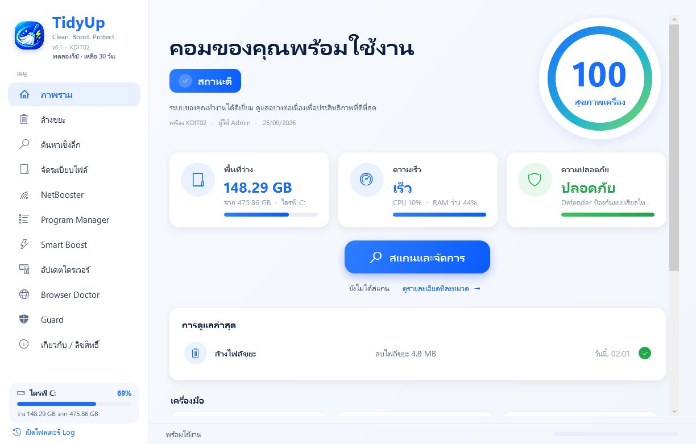
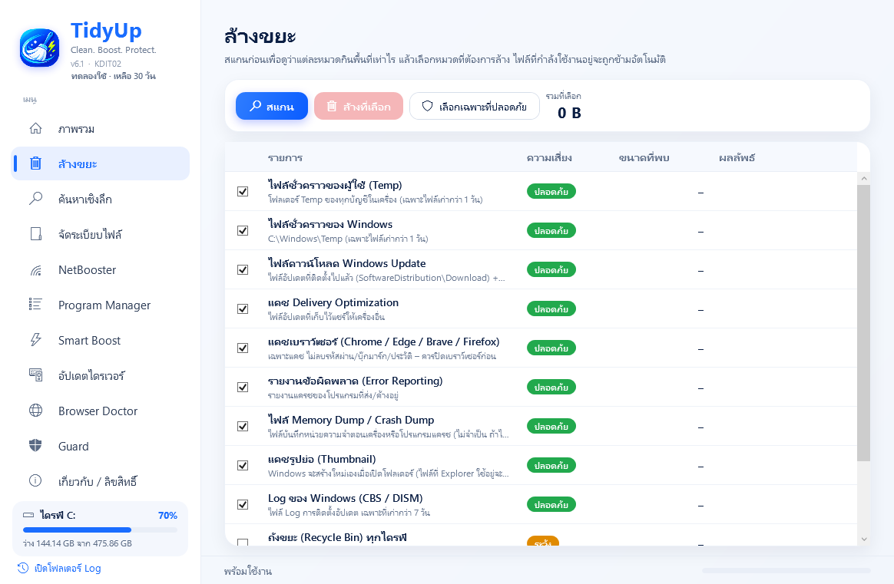
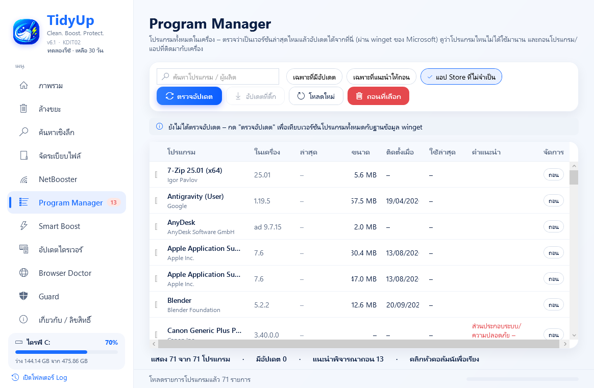
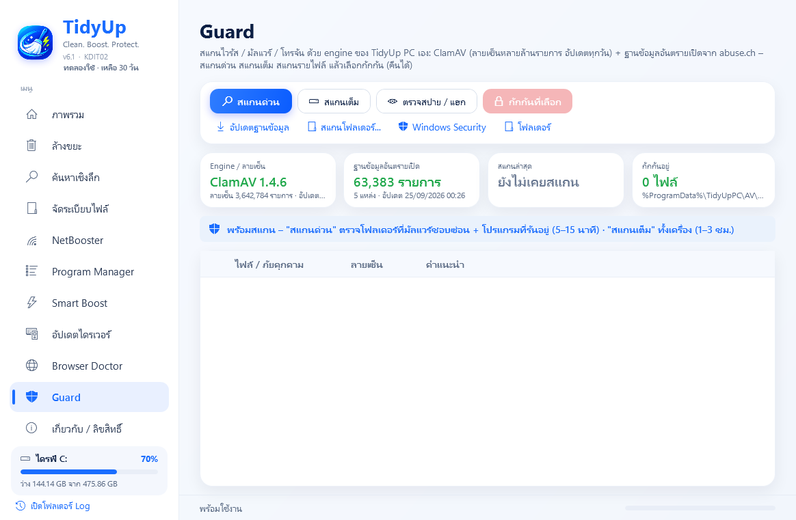

ดูแลคอม Windows ให้เร็ว สะอาด และปลอดภัย
TidyUp PC ล้างไฟล์ขยะ เร่งการเปิดเครื่อง อัปเดตโปรแกรมและไดรเวอร์ ซ่อมเบราว์เซอร์ที่ถูกยึด และสแกนมัลแวร์ ทุกเครื่องมือแสดงสิ่งที่พบพร้อมเหตุผล ก่อนจะเปลี่ยนแปลงอะไรในเครื่อง

เครื่องมือดูแลคอมครบในโปรแกรมเดียว
ล้างขยะ
12 หมวด ตั้งแต่ไฟล์ชั่วคราว ไฟล์ Windows Update เก่า ไปจนถึงแคชเบราว์เซอร์ ทุกรายการมีระดับความปลอดภัยกำกับ
ค้นหาเชิงลึก
หาแคชโปรแกรม ไดรเวอร์เก่า ไฟล์ขนาดใหญ่ ไฟล์ซ้ำ และดาวน์โหลดเก่า พร้อมเหตุผลและตัวอย่างก่อนลบ
จัดระเบียบไฟล์
รวมไฟล์ที่กระจายอยู่บน Desktop และ Downloads เข้าโฟลเดอร์ตามชนิด และย้อนกลับได้ทุกครั้ง
NetBooster
หาสาเหตุที่เน็ตช้า ตั้งแต่ Wi-Fi สาย LAN เราเตอร์ ไปจนถึง DNS พร้อมทดสอบความเร็ว ทุกการแก้คืนค่าเดิมได้ในคลิกเดียว
Program Manager
ดูโปรแกรมทั้งหมดในเครื่อง และอัปเดตผ่าน winget ของ Microsoft โดยไม่ต้องหาตัวติดตั้งเอง
Smart Boost
หาสิ่งที่ทำให้เครื่องช้า และจัดสรร CPU กับ RAM ให้แอปที่คุณใช้จริง ปรับได้ 3 ระดับ
อัปเดตไดรเวอร์
เทียบไดรเวอร์กับ Windows Update และเครื่องมือของผู้ผลิต สำรองไดรเวอร์เดิมและสร้างจุดคืนค่าก่อนอัปเดตทุกครั้ง
Browser Doctor
ซ่อม Chrome, Edge และ Brave ที่ถูกเปลี่ยนหน้าค้นหา มีส่วนขยายแปลก ๆ หรือโฆษณาเด้ง และย้อนกลับได้ทั้งหมด
Guard
สแกนมัลแวร์ด้วยเอนจิน ClamAV และฐานข้อมูล abuse.ch ที่มากับโปรแกรม พร้อม Spy Check ตรวจการแอบเชื่อมต่อ
ใช้ครบทุกเครื่องมือได้ฟรี
ดาวน์โหลด TidyUp PCเห็นทุกรายการก่อนลบ
ทุกรายการมีระดับความปลอดภัยและเหตุผลกำกับ โปรแกรมติ๊กให้เฉพาะรายการที่ปลอดภัย ส่วนไฟล์ของคุณจะย้ายไปถังขยะ และเฉพาะเมื่อคุณเลือกเท่านั้น

อัปเดตทุกโปรแกรมจากที่เดียว
เช็กว่าโปรแกรมไหนมีเวอร์ชันใหม่ แล้วอัปเดตผ่าน winget ของ Microsoft ได้ทันที พร้อมแนะนำโปรแกรมที่ไม่ได้ใช้มานาน

สแกนมัลแวร์ ทำงานคู่กับ Defender
Guard ใช้เอนจิน ClamAV และฐานข้อมูลภัยคุกคามจาก abuse.ch ที่มากับโปรแกรม สแกนตามสั่ง กักกันและคืนไฟล์ได้ และทำงานคู่กับ Microsoft Defender ไม่ได้มาแทนที่

สแกน ดูผล แล้วคุณเป็นคนตัดสินใจ
สแกน
กด "สแกนและจัดการ" แล้ว TidyUp PC จะตรวจหาสิ่งที่ควรดูแลในเครื่อง ใช้เวลาไม่กี่วินาที
ดูผล
อ่านคะแนนสุขภาพเครื่อง และรายการที่พบ พร้อมระดับความปลอดภัย ขนาด และเหตุผลของแต่ละรายการ
จัดการ
แก้ทั้งหมดหรือเลือกทีละรายการ ทุกการทำงานสำรองค่าเดิมไว้และย้อนกลับได้
ข้อมูลส่วนตัวของคุณอยู่ในเครื่อง
ไม่เก็บข้อมูลส่วนตัว
TidyUp PC ไม่เก็บและไม่ส่งข้อมูลส่วนตัวของคุณออกไปที่ไหน
ต่ออินเทอร์เน็ตเท่าที่จำเป็น
ใช้เฉพาะตอนอัปเดตฐานข้อมูลไวรัส ตรวจและอัปเดตโปรแกรมกับไดรเวอร์ ทดสอบความเร็ว และเช็กเวอร์ชันใหม่
บันทึกทุกการทำงาน
ทุกการทำงานบันทึกลง log ที่เปิดดูได้จากในโปรแกรม และย้อนกลับได้ ทั้งไฟล์ที่กักกัน ค่าที่เปลี่ยน และบริการที่หยุด
ใช้ฟรีทุกฟีเจอร์ ครบ 30 วันแล้วสนับสนุนเราได้
ไม่ต้องสมัครสมาชิก ไม่ต้องใช้บัตร ครบ 30 วันแล้วยังใช้ได้ทุกฟีเจอร์ตามเดิม ถ้าชอบ สนับสนุนเราได้ด้วย License Key ซึ่งเปิดใช้แบบออฟไลน์
คำถามที่พบบ่อย
รองรับ Windows รุ่นไหน?
Windows 10 และ Windows 11 แบบ 64-bit โปรแกรมทำงานด้วยสิทธิ์ผู้ดูแล (Administrator) เพราะต้องล้างไฟล์ระบบและปรับค่า Windows
ทำไม Windows ขึ้นเตือน "Unknown publisher" ตอนเปิดโปรแกรม?
TidyUp PC เซ็นด้วยใบรับรองของ NanoHash เองซึ่ง Windows ยังไม่รู้จัก จึงอาจแสดงคำเตือนนี้ ให้ดาวน์โหลดจาก nanohash.biz เท่านั้น และตรวจค่า SHA-256 ของไฟล์ให้ตรงกับใน version.json ของ release นั้นก่อน ถ้าตรงกันจึงกด "More info" แล้ว "Run anyway" ถ้าไม่แน่ใจ อย่าเปิดไฟล์
การล้างไฟล์จะลบไฟล์ส่วนตัวไหม?
ไม่ โปรแกรมล้างเฉพาะไฟล์ชั่วคราวและแคชของระบบกับโปรแกรม ทุกรายการมีระดับความปลอดภัย และติ๊กให้เฉพาะรายการที่ปลอดภัย ส่วนไฟล์ของคุณ เช่น ดาวน์โหลดเก่า จะย้ายไปถังขยะ และเฉพาะเมื่อคุณเลือกเท่านั้น
ใช้แทนโปรแกรมป้องกันไวรัสได้ไหม?
ไม่ได้ Guard สแกนตามสั่ง ไม่ได้เฝ้าระวังตลอดเวลา ให้เปิด Microsoft Defender หรือโปรแกรมป้องกันไวรัสตัวอื่นไว้ตามปกติ TidyUp PC ทำงานร่วมกันได้
ครบ 30 วันแล้วจะเป็นอย่างไร?
ยังใช้ได้ทุกฟีเจอร์ตามเดิม จะมีกล่องชวนสนับสนุนตอนเปิดโปรแกรม เมื่อสนับสนุนด้วย License Key กล่องนี้จะหายไป
ติดตั้งอย่างไร?
ดาวน์โหลด TidyUpSetup.exe แล้วดับเบิลคลิกเพื่อติดตั้ง ถอนออกได้จาก Settings > Apps ถ้าไม่อยากติดตั้ง ใช้ TidyUpPC.exe จากหน้า Releases เปิดใช้ได้ทันที